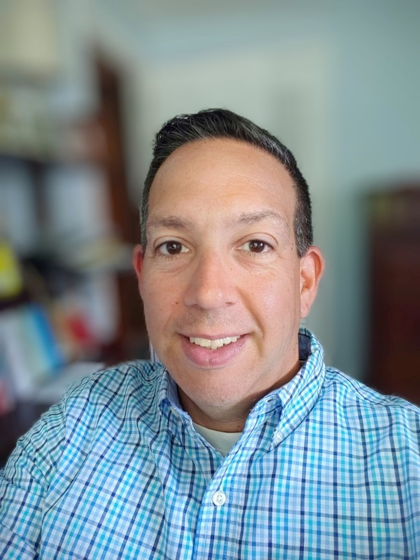

Jaime R Weingartner
PROFESSIONAL PROFILE
Experienced healthcare professional with a demonstrated history of working in business operations. Strong skill set in data manipulation and analysis, as well as, both Medicare and Medicaid Prospective Payment and Reimbursement. Proven analytical and critical thinking skills. Thrives working in fast paced environments with changing priorities while utilizing strong organizational, interpersonal, communication and technical skills such as Microsoft Office suite, Agile, Rally, Altassian Confluence, Slack, SQL, and SharePoint.
PROFESSIONAL EXPERIENCE
Gainwell Technologies – McLean, VA – Sr. Professional Business Analyst (June 2022 – Present)
As a Sr. Professional Senior Analyst, I am actively involved in the waterfall Design, Development, & Implementation (DDI) process whose primary goal is to successfully implement Gainwell’s Commercial Off-the-Shelf (COTS) claims adjudication & reimbursement solution to our State Medicaid clients.
- Participate in all phases of Gainwell’s Design, Development, & Implementation (DDI) process
- Participate, facilitate, and present (when applicable) in Requirements Validation (RV) Sessions
- Participate, facilitate, and present (when applicable) in breakout sessions when needed to perform deep dive into requirements needing further discussion and coordination
- Create, update, & maintain requirements in Application Lifecycle Management (ALM) application
- Create, update, & maintain the Business Requirements Document (BRD) & System Design Document (SDD)
- Perform analysis on requirements along with resources and information provided by our state client to determine gaps and preparing for testing, configuration, and delivery of Gainwell solution
Burgess Group/HealthEdge – West Hartford, CT - Payment Policy Analyst II (Dec. 2020 – March 2022)
As a Payment Policy Analyst II, I supported Burgess’s legacy & 2 web-based applications primarily focusing on Medicare OPPS/HOPD, Hospice, and State Medicaid Prospective Payment & Reimbursement. Successfully performs required regulatory updates to our Prospective Payment product line in an Agile SDLC environment using Agile and Kanban.
- Research and analysis of CMS regulations to elicit requirements that impact our product line
- Analysis of existing system behavior and desired outcome
- Collaboration and review of client documentation with technical writers
- User Acceptance test cases to verify correct implementation of respective updates
- Validation of data using Microsoft Excel automation tools & SQL to improve efficiency
Aetna/CVS Health- Hartford, CT - Product Consultant (April 2019 – Dec. 2020)
As a Product Consultant I support Aetna's web portal and mobile app for our commercially insurance members. To that end, I am primarily responsible for:
- Elicit requirements from our business stakeholders
- Documenting requirements using Rally and Confluence and following SAFe Agile workflow
- Collaboration with business owners’ on roadmaps to identify alignment and gaps
- Tasked with collaborating with internal physicians to improve our provider search capabilities
United Health Group - OptumInsight Rocky Hill, CT - Senior Business Analyst (Sept. 2009 – April 2019)
Successfully performs required regulatory updates to our Prospective Payment Software product line in an Agile SDLC environment using CA Agile and KanBan, and is a valuable contributor to the 300+ product releases per year.
- Research and analysis of CMS regulations to elicit requirements that impact our product line
- Lead requirement sessions to confirm clear understanding of requirements
- Collaboration and review of client documentation with technical writers
- User Acceptance test cases to verify correct implementation of respective updates
- Validation of data files using Microsoft Excel and creation of automation tools to improve efficiency
- Provided webinars to customers in an effort to educate them about our various products and updates
- Training and development of new hires
- Identified for special eligibility comparison project
- Participated in volunteer opportunity at local horse rescue performing grounds maintenance
- Participated in volunteer opportunity at Ronald McDonald House cleaning facilities
Travelers Hartford, CT - Associate Business Analyst (Sept. 2007 – Sept. 2009)
Responsible for the maintenance of and updates to the bond insurance issuance system.
- Elicit requirements from our business stakeholders
- Developed an in-depth knowledge of the Bond line of business, workflow, product offerings and systems
- Drafted business requirement specification documents, spreadsheets, charts, diagrams, and other documents to implement system solutions
- Supported projects while managing ongoing systems & production support work
- Accountable for triaging of project and system related defects
- Participated in user acceptance testing
United Healthcare Hartford, CT Inventory Specialist (Nov. 2006 – Feb. 2007)
Using daily status reports responsible for analyzing inefficiencies in product delivery process and recommending solutions.
- Member of collaborative and critical thinking team responsible for analyzing and utilizing newly developed reports
- Proposed process improvement recommendations resulting in better efficiency, as well as, the resolution of escalated cases and issues
- Attended daily meetings/conference calls to report findings to management
- Utilized Microsoft Excel and Access to create, dissect and tailor reports
Contract Analyst (June 2004 – Nov. 2006)
Responsible for creation and maintenance of online insurance policies held by corporate clients for their employees.
- Responsible for implementation, renewal, and maintenance of online corporate medical insurance policies
- Collaborated with the account management team to understand client requirements
- Accountable for reporting status of individual case load to management
The Hartford Simsbury, CT - Senior Service Specialist (Sept. 2000 – Jan. 2004)
Responsible for answering individual annuity phone calls in a call center.
- Excelled in the maintenance of individual annuity contracts via broker and owner telephone calls
- Transferred funds between accounts
- Updated financial enrollment programs
- Promptly drafted and mailed correspondence as well as any requested forms
- Assisted in conflict resolution via client and broker calls
- Responsible for training and development of new hires
EDUCATION:
Bachelor of Arts, History/Political Science with minor in communications, Mount Saint Mary College, Newburgh, NY
Masters of Management, Information Technology, Cambridge College, Springfield, MA
CERTIFICATIONS:
Certification in Business Analysis & Six Sigma Green Belt, Villanova University Online